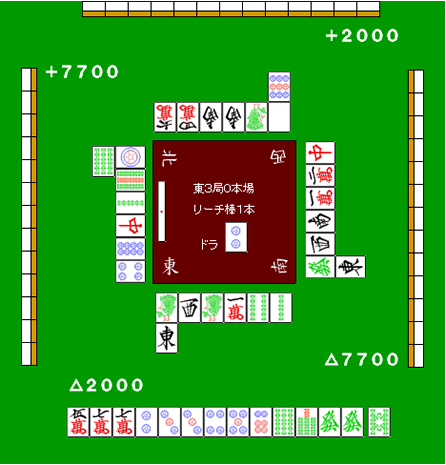

【日本麻雀讲座译文】防守9—兜牌
【日本麻雀讲座译文】防守9—兜牌 · 原网页
译文与整理说明
原正文和原图保持；九处未知按精确候选分别保留。独立限定辨识/教学影响证据仅允许忠实展示作者原有论证，不认证完整牌河、暗手、概率或最优。原技术未通过回执和原raw保持。
【审校范围（非原文）1】保留两张原图及其候选转录中的四处明确未知：b0004上方第一排最左万子，以及b0006左方A、B和右方C；不得以推测牌码替换。原文段落
【审校范围（非原文）2】保持b0001至b0009的原始DOM顺序、图文对应关系、原文条件、sourceSegments及其marks和href，并保留各块给出的tableContext。原文中的字词不因本次辨识而改写。原文段落
【审校范围（非原文）3】保留“没有人立直”“一向听”“摸到5饼什么的”“可以考虑”“摸到危险牌”等条件，以及七对子缺少确实性、须根据点数判断和防守基本为弃和的限制。原文段落
【审校范围（非原文）4】将作者的建议和风险评价作为原文论证展示；不得把筋牌3万或“两张牌的安全”扩写为已独立证明对所有对手绝对安全。原文段落
【审校范围（非原文）5】不得声称完整牌河、对手暗手、概率或最优策略已由本次审查恢复或验证；这也不是整章通过结论。原文段落
免责声明：原文段落
以下文章的著作权等各种权利归原作者所有，翻译 By SeventhTG（XD）。如果你喜欢本文并有幸让你产生了转载的想法，请注明原作者、原文地址以及译者，谢谢。原文段落
原文地址：http://beginners.biz/reach/mamori9.html ------------------------------------------------------------------------------------ 兜牌： 兜牌即一边扣住危险牌，一边向着和牌或者是听牌前进的打法。 一般情况下，对手立直之后： 1.自己没有听牌也要向着听牌或者和牌前进。 2.如果对日对自己不利的话。即使自己听牌也会拆掉手牌。 这样的情况就出现了“兜”这个选择了。 具体的说就是： 拆对子、拆搭子、拆暗刻、七对子4种方法。 ------------------------------------------------------------------------------------ 拆对子 ------------------------------------------------------------------------------------ 这是兜牌的常用手段， 通过一次的话，第二次也能通过。而且不会拆乱自己的手牌。 例1： 原文段落

完整牌例文字与牌编码
中央文字：东3局0本场；立直棒1根；“宝牌”右侧为2p。中央左侧竖放一根立直棒。中央四角风位：左上北（4z）、右上西（3z）、左下东（1z）、右下南（2z）。 点数标记按画面位置：左上+7700，右上+2000，右下△7700，左下△2000。 下方手牌从左至右：6m 7m 7m 2p 3p 3p 4p 5p 6p 6s 7s 6z 6z；右侧分隔的摸入牌：8s。 下方牌河：第一排从画面左至右为1s 3z 1s 1m 4s 2s；第二排在第一排最左侧1s下方为1z。牌面均朝向下方玩家。 左方牌河：靠中央的一列从画面上至下为1p 9s 2s 7z 8p 4p，牌面相对画面顺时针旋转90度；第二列在最上方1p左侧为6s，此牌相对该玩家正常弃牌横置，是立直宣言牌，在画面中呈竖向。 上方牌河：第一排从画面左至右为［万子点数未辨明］9m 2z 2z 1s 5z；第二排在第一排最右侧5z上方为9p。牌面均相对画面倒置。 右方牌河：靠中央的一列从画面上至下为7z 2m 1m 2z 3z 6z；第二列在最下方6z右侧为1z。牌面相对画面逆时针旋转90度。 上方、左方、右方各显示13张背面朝向画面的暗手牌。 原图未显示的信息：上方牌河第一排从画面左数第1张：可辨为万子，但倒置的点数未能可靠辨明。
比如这样的例子，这是一个很能体现兜牌效果的例子。 弃和去切掉4饼和6索实在是太可惜了。 一发打3饼确实有点危险。 这里切掉已经打出1张的發是好手， 能够做成门断平宝牌1追立的话是很理想的。 ------------------------------------------------------------------------------------ 拆搭子 ------------------------------------------------------------------------------------ 我们再来看具体的例子吧。 原文段落

完整牌例文字与牌编码
中央文字：东2局0本场；立直棒1根；“宝牌”右侧为2s。中央上侧横放一根立直棒。中央四角风位：左上东（1z）、右上北（4z）、左下南（2z）、右下西（3z）。 点数标记按画面位置：左上+3900，右上△3900，右下原点，左下原点。 下方手牌从左至右：2m 3m 7m 7m 8m 8m 2p 4p 6p 7p 8p 3s 4s；右侧分隔的摸入牌：8m。 下方牌河：第一排从画面左至右为3z 7z 5z 2z 1p 9s；第二排在第一排最左侧3z下方为7s。牌面均朝向下方玩家。 左方牌河：靠中央的一列从画面上至下为4z ［万子点数未辨明A］6z 1z ［万子点数未辨明B］5z；第二列在最上方4z左侧为2p，在其下方为3z。牌面相对画面顺时针旋转90度。 上方牌河：第一排从画面左至右为6m 2m 8p 5z 6z 2m，牌面均相对画面倒置；第二排在第一排最右侧2m上方为4s，此牌相对该玩家正常弃牌横置，是立直宣言牌，在画面中呈横向。 右方牌河：靠中央的一列从画面上至下为1s 8m 1m 1z 7z 2z；第二列在最下方2z右侧为［万子点数未辨明C］。牌面相对画面逆时针旋转90度。 上方、左方、右方各显示13张背面朝向画面的暗手牌。 原图未显示的信息：万子点数未辨明A：左方牌河靠中央一列从画面上数第2张，可辨为万子，点数未能可靠辨明。；万子点数未辨明B：左方牌河靠中央一列从画面上数第5张，可辨为万子，点数未能可靠辨明。；万子点数未辨明C：右方牌河第二列、最下方2z右侧的一张，可辨为万子，点数未能可靠辨明。
要是没有人立直的话应该拆掉24饼的搭子。（全攻的时候就该这么打） 兜牌的话，这里应该切掉2万。神进张摸到3饼的话就立直。 一向听的话，摸到5饼什么的，可以可以考虑切掉筋牌的3万。 同样是兜牌，这里打4索就是恶手。 不仅宝牌是2索，作为胜负牌的3索是非常危险的。 要拆掉搭子兜牌的话，就需要保证两张牌的安全。 上面虽然这么说，不过切掉2万之后摸到危险牌的话，拿还是快快弃和为上。 ------------------------------------------------------------------------------------ 拆暗刻 ------------------------------------------------------------------------------------ 拆掉3张安全牌的暗刻时，也还是可以让手牌有所进展的。 在这三巡里能够通过的牌增加的话，偶尔还是可以向和牌前进的。 原文段落

完整牌例文字与牌编码
上排左侧标签“立直”；其右侧弃牌从左至右为：1p 5z 7z 6z 4z 4p 7z 7p 5s 2m。最后一张2m横置，其余牌竖向排列。 下排左侧标签“手牌”；其右侧手牌从左至右为：3m 7m 5p 6p 2s 4s 4s 5s 6s 7s 3z 3z 3z。 手牌右侧标签“摸入”，其右侧为3s。 最右侧标签“宝牌”，其右侧为6m。
比如这样的手牌，拆掉西的暗刻。 偶尔最后还是能以食断和牌的。 ------------------------------------------------------------------------------------ 七对子 ------------------------------------------------------------------------------------ 这是一个缺少确实性的方法，大家有没有面对立直弃和的时候，不知什么时候手牌居然七对子听牌了呢？ 比如役牌是宝牌，用不上的牌却又打不出去，同时自己有非向着听牌前进不可的时候。那就只能霸王硬上弓强凹单骑听牌了。 这个时候七对子是可以放手一搏的方法。 ------------------------------------------------------------------------------------ 兜牌需要注意的地方 ------------------------------------------------------------------------------------ 兜牌是应该在“能兜牌”的情况下使用的。 本来有和牌希望的牌也应该弃和；有些苦逼的牌也必须放手一搏。 这些都要根据自己的点数情况来进行判断。 “能兜牌”的状况是不确定的。 不要忘了防守的基本是“弃和”。 （待续）原文段落